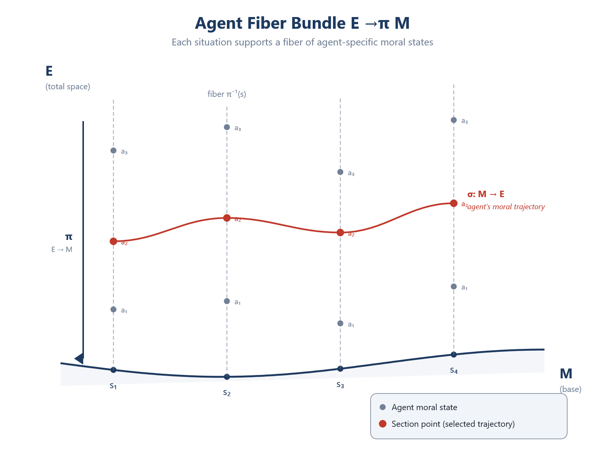

Chapter 4: Mathematical Preliminaries
RUNNING EXAMPLE — Priya’s Model
Priya sketches on a whiteboard. A patient’s situation is a point in some space. What space? She lists relevant dimensions: medical severity, trial compatibility, travel burden, insurance status, support-network strength, informed-consent capacity. Six dimensions, at minimum. She draws arrows representing different fairness adjustments—tangent vectors. She notices that adjusting ‘travel burden’ in one direction helps rural patients but hurts patients with mobility disabilities, because these dimensions are coupled. She needs a metric that tells her how the dimensions relate. She does not have the vocabulary yet, but she is discovering that her patient space is a manifold, and her fairness interventions are vectors in its tangent space.
This chapter develops the geometric vocabulary used throughout the book. No prior knowledge of differential geometry is assumed; we require only multivariate calculus and linear algebra. Readers with background in differential geometry may skim Sections 4.1–4.5 and focus on Section 4.6 (stratified spaces) and Section 4.7 (gauge theory), which introduce structures less commonly encountered.
A Note on Epistemic Status
The mathematical structures introduced in this chapter — manifolds, tensors, metrics, connections, fiber bundles, stratified spaces, gauge transformations — are tools. They are powerful tools, honed over two centuries by mathematicians and physicists working on problems where structure varies across space. Their power lies in their domain-adaptedness: they were built to describe exactly the kind of phenomena (curvature, path-dependence, boundary discontinuity, gauge invariance) that the moral domain exhibits. But they are instruments, not mirrors. The question of whether the moral manifold is “really there” or “usefully modeled” is addressed in Chapter 9 (which argues for a governance account) and Chapter 29 (which surveys the realist, instrumentalist, and governance positions). This chapter teaches how to use the toolkit. The reader should carry through the formalism the understanding that every definition and theorem that follows is conditional on modeling choices made explicit in Chapter 5.
One limitation deserves mention at the outset. Gödel’s incompleteness theorems establish that no formal system of sufficient expressive power can prove its own consistency. The framework developed in this book is such a system. It cannot, therefore, self-validate — it cannot prove from within that its axioms are the right axioms or that its theorems capture what they claim to capture. This is not a defect peculiar to geometric ethics; it is a structural feature of all formal systems, from Peano arithmetic to the Standard Model. The appropriate response is not to abandon formalism but to test it externally — against empirical data (Chapter 17), against competing frameworks (Appendix E), and against the collective judgment of practitioners who use the tools and evaluate their fit. The framework’s authority is pragmatic, not self-grounding.
4.1 Manifolds
The Idea
A manifold is a space that locally looks like ordinary Euclidean space ℝⁿ but may have nontrivial global structure. The surface of the Earth is the standard example: any small region looks flat (a neighborhood of a point can be mapped onto a patch of ℝ²), but the whole surface is curved, closed, and cannot be covered by a single flat map without distortion.
This is precisely the concept we need for moral space. Locally — in the neighborhood of a single moral situation — moral trade-offs may look like ordinary multi-dimensional optimization: move a little in one direction to improve fairness, a little in another to improve efficiency. The space of nearby variations is flat. But globally, moral space may be curved (obligations change as you traverse it), closed in certain directions (you cannot go past certain constraints), or have nontrivial topology (circling back to the “same” situation may yield a different moral assessment).
Formal Definition
Definition 4.1 (Topological Manifold). An n-dimensional topological manifold is a topological space M that is: 1. Hausdorff: Distinct points can be separated by disjoint open sets. 2. Second-countable: The topology has a countable basis. 3. Locally Euclidean: Every point p ∈ M has a neighborhood homeomorphic to an open subset of ℝⁿ.
Condition (3) is the essential one: around every point, there is a coordinate chart — a continuous bijection φ: U → V, where U ⊂ M is open and V ⊂ ℝⁿ is open. The chart assigns n real numbers (coordinates) to each point in U. Conditions (1) and (2) are topological regularity conditions that exclude pathological spaces.
A collection of charts {(U_α, φ_α)} that covers all of M is called an atlas. When two charts overlap — when U_α ∩ U_β ≠ ∅ — we get a transition function
ψαβ=ϕβ∘ϕα-1:ϕα(Uα∩Uβ)→ϕβ(Uα∩Uβ)
which tells us how to translate between the two coordinate systems on their overlap.
Definition 4.2 (Smooth Manifold). A topological manifold is smooth if it admits an atlas whose transition functions are all smooth (infinitely differentiable, i.e., C^∞).
Smoothness is what allows us to do calculus on M: to take derivatives, define gradients, and study how quantities change from point to point.
Example: The Circle
The circle S¹ is a 1-dimensional manifold. No single coordinate chart covers S¹ (a single chart would have to be homeomorphic to an interval in ℝ, and circles are not homeomorphic to intervals). But two charts suffice: one covering all but the “north pole” and one covering all but the “south pole.” The transition function on their overlap is smooth. Hence S¹ is a smooth 1-manifold.
Example: The 2-Simplex
The space of probability distributions over three outcomes is the 2-simplex:
Δ2={(p1,p2,p3)∈R3:pi≥0, p1+p2+p3=1}
The interior of Δ² (where all p_i > 0) is a 2-dimensional smooth manifold. The boundary — where one or more p_i = 0 — is not itself a manifold of the same dimension, but the whole simplex has the structure of a manifold with boundary (or, as we shall see, a stratified space).
This example is directly relevant: the simplex of probability distributions over actions is a natural candidate for part of moral space.
4.2 Tangent Spaces and Tangent Bundles
Tangent Vectors
At each point p of a smooth manifold M, there is a tangent space T_pM — a vector space of the same dimension as M that represents the “infinitesimal directions” one can move from p.
In coordinates (x¹, …, xⁿ), the tangent space at p is spanned by the partial derivative operators {∂/∂x¹_p, …, ∂/∂xⁿ_p}. A tangent vector v ∈ T_pM can be written
v=vi(∂)/(∂xi)|p
where v^i are the components of v in this coordinate basis. (We use the Einstein summation convention: repeated upper and lower indices are summed over.)
Intuition: A tangent vector at p is a “velocity” — a direction and rate of change. If γ(t) is a curve on M with γ(0) = p, then its velocity γ’(0) is a tangent vector at p. The tangent space T_pM is the collection of all such velocities.
Moral interpretation: At a point p in moral space (a particular moral situation), the tangent space T_pM represents the possible variations of the situation: small changes in resource allocation, slight modifications of commitments, marginal shifts in context. An obligation vector O(p) ∈ T_pM points in the direction one ought to move.
The Tangent Bundle
Definition 4.3 (Tangent Bundle). The tangent bundle TM is the disjoint union of all tangent spaces:
TM=⨆p∈MTpM={(p,v):p∈M, v∈TpM}
TM is itself a smooth manifold of dimension 2n (n coordinates for the base point, n for the tangent vector). A vector field on M is a smooth assignment of a tangent vector to each point — a smooth section X: M → TM satisfying X(p) ∈ T_pM for all p.
Transformation of Tangent Vectors
Under a change of coordinates x → x̃, tangent vector components transform by the Jacobian:
vi=(∂xi)/(∂xj)vj
This is the prototype of all tensor transformation laws. Objects that transform by one copy of the Jacobian are called contravariant vectors (or simply vectors). The transformation law ensures that the geometric object v is independent of the coordinate choice — only its components change.
4.3 Covectors, Dual Spaces, and the Cotangent Bundle
Covectors
A covector (or 1-form) at p is a linear map ω: T_pM → ℝ. The space of all covectors at p is the dual space T_pM, also called the cotangent space*.
In coordinates, covectors have components ω_i (lower index) and transform by the inverse Jacobian:
ωi=(∂xj)/(∂xi)ωj
The fundamental operation between a vector and a covector is contraction:
ω(v)=ωivi∈R
This produces a scalar — a number independent of coordinates. The contraction is the geometric content of “evaluating”: applying a covector to a vector yields an invariant quantity.
Moral interpretation: If obligations are vectors (upper index, pointing in the direction one should move), then interests are naturally covectors (lower index, assigning a real-valued weight to each direction). The contraction S = I_μ O^μ — interest applied to obligation — yields satisfaction, a scalar. This fundamental formula, developed in Chapter 6, is the geometric expression of “how well obligations align with interests.”
The Gradient
The most natural covector is the gradient of a function. If f: M → ℝ is a smooth function, its gradient df is a covector field:
(df)i=(∂f)/(∂xi)
The gradient df at p is the covector that, applied to any tangent vector v, gives the rate of change of f in the direction v:
df(v)=vi(∂f)/(∂xi)=v(f)
Note: The gradient is a covector, not a vector. In ℝⁿ with the standard Euclidean metric, the distinction is invisible (the metric provides a canonical identification between vectors and covectors). On a general manifold, the distinction matters — and it matters for ethics. Converting a gradient (covector) into a “direction of steepest ascent” (vector) requires the metric. Different metrics yield different “steepest” directions from the same gradient. This is the geometric content of the observation that different ethical theories, given the same moral landscape, may prescribe different actions.
4.4 Tensors
Definition
A tensor of type (r, s) at p ∈ M is a multilinear map
T:Tp*M×⋯×Tp*M⏟r×TpM×⋯×TpM⏟s→R
In coordinates, T has components Tj1⋯jsi1⋯ir with r upper indices and s lower indices. The rank of the tensor is (r, s), and the total number of indices is r + s.
Examples: - A scalar is a (0, 0)-tensor: a number, invariant under coordinate changes. - A vector is a (1, 0)-tensor: one upper index, transforms by the Jacobian. - A covector is a (0, 1)-tensor: one lower index, transforms by the inverse Jacobian. - The metric (Section 4.5) is a (0, 2)-tensor: two lower indices.
Transformation Law
Under a coordinate change x → x̃, the components of a (r, s)-tensor transform as:
Tj1⋯jsi1⋯ir=(∂xi1)/(∂xk1)⋯(∂xir)/(∂xkr)(∂xl1)/(∂xj1)⋯(∂xls)/(∂xjs)Tl1⋯lsk1⋯kr
Each upper index contributes one Jacobian factor; each lower index contributes one inverse Jacobian factor. The key property: the tensor itself is a geometric object independent of coordinates; only its components change.
This is why tensors are central to the framework. The requirement that moral evaluation be independent of description — the Bond Invariance Principle — is precisely the requirement that moral quantities be tensorial: their values, after proper transformation, are the same in every coordinate system.
Contraction
Contraction is the operation of summing over a paired upper and lower index:
C(T)j1⋯jl⋯jsi1⋯ik⋯ir=Tj1⋯m⋯jsi1⋯m⋯ir
Contraction reduces the rank by (1, 1). It produces a new tensor whose value is independent of coordinates (the sum over the shared index is invariant).
Moral significance: The contraction from a high-rank moral tensor to a scalar decision is the geometric version of what happens when we decide. Information is lost (rank decreases), but the result is invariant. Chapter 15 develops the concept of moral contraction in detail: the process by which the rich tensorial structure of a moral situation is reduced to an action, and the moral residue — the normative information discarded by contraction.
Tensor Fields
A tensor field of type (r, s) on M is a smooth assignment of a (r, s)-tensor to each point p ∈ M. The metric tensor, curvature tensor, and moral evaluation tensors are all tensor fields.
4.5 The Metric Tensor
Definition
A metric tensor (or simply metric) on M is a smooth (0, 2)-tensor field g that is: 1. Symmetric: g(v, w) = g(w, v) for all tangent vectors v, w. 2. Non-degenerate: If g(v, w) = 0 for all w, then v = 0.
In coordinates:
g=gij dxi⊗dxj
The metric defines an inner product on each tangent space: g(v, w) = g_{ij} v^i w^j. This allows us to measure:
Lengths: v = √(g(v, v)) (when the inner product is positive).
Angles: The angle between v and w is determined by g(v, w) / (v w).
Distances: The length of a curve γ from a to b is ∫_a^b √(g(γ’, γ’)) dt.
Riemannian vs. Semi-Riemannian vs. Degenerate
If g is positive-definite (g(v, v) > 0 for all nonzero v), we have a Riemannian metric, and M is a Riemannian manifold. Distances are always positive, and the geometry behaves like a generalization of Euclidean space.
If g has indefinite signature (some directions give g(v, v) > 0, others g(v, v) < 0), we have a semi-Riemannian (or pseudo-Riemannian) metric. Spacetime in general relativity has signature (-,+,+,+).
For moral space, we must also consider degenerate metrics: metrics where condition (2) fails, so that g(v, w) = 0 for all w does not imply v = 0. A degenerate metric means certain directions are “invisible” to the inner product — they have zero length and zero angle with everything.
Moral interpretation: A degenerate metric represents incommensurability. If the metric is degenerate along the subspace spanned by “ecological value” and “economic value,” it means there is no well-defined trade-off ratio between them. They cannot be compared by the metric — not because we lack information, but because the geometric structure of moral space does not support the comparison. This is a precise formalization of a claim that moral philosophers have made informally for decades.
The Metric as Musical Isomorphism
A non-degenerate metric provides a canonical map between vectors and covectors:
ωi↦ωj=gijωi ("raising indices")
vi↦vj=gijvi ("lowering indices")
where g^{ij} is the inverse of g_{ij}. This is called the musical isomorphism (the notation ♭ for lowering and ♯ for raising). It identifies vectors with covectors — but the identification depends on the choice of metric. Different metrics yield different identifications.
This is why the metric matters: it determines how we convert between obligations (vectors) and interests (covectors), and how we compute the satisfaction scalar S = Iμ Oμ. When the interest is naturally a vector rather than a covector, the metric mediates: S = gμν Oμ Iν. Different metrics — different ethical theories — assign different satisfactions to the same obligation-interest pair.
4.6 Connections, Parallel Transport, and Curvature
The Problem of Comparison
On a flat space, comparing vectors at different points is straightforward: translate one to the location of the other and compare. On a curved manifold, this does not work. There is no canonical way to identify the tangent space at p with the tangent space at q. To compare vectors at different points, we need additional structure: a connection.
Moral interpretation: Can we compare obligations across contexts? The obligation to keep a promise in one situation and the obligation to help a stranger in another — are they “the same” obligation, differently instantiated? On a flat moral manifold, the answer would be straightforward. On a curved one, it depends on how we transport the obligation from one context to the other — and the answer may depend on the path.
The Connection
Definition 4.4 (Affine Connection). An affine connection (or covariant derivative) on M is a map ∇ that takes a vector field X and a vector field Y and produces a new vector field ∇_X Y, satisfying:
∇_{fX+gY} Z = f∇_X Z + g∇_Y Z (linearity in the first argument)
∇_X(Y + Z) = ∇_X Y + ∇_X Z (additivity in the second argument)
∇_X(fY) = (Xf)Y + f∇_X Y (Leibniz rule)
The connection is specified in coordinates by the Christoffel symbols Γ^k_{ij}:
∇∂i∂j=Γijk ∂k
The covariant derivative of a vector field V along a direction ∂_i is:
(∇iV)k=(∂Vk)/(∂xi)+ΓijkVj
The Christoffel symbols encode how the coordinate basis vectors change from point to point — the “correction” needed to account for the curvature of the manifold.
Levi-Civita connection. On a Riemannian manifold, there is a unique connection that is: - Metric-compatible: ∇g = 0 (parallel transport preserves inner products) - Torsion-free: ∇_X Y - ∇_Y X = [X, Y]
This is the Levi-Civita connection, and its Christoffel symbols are determined by the metric:
Γijk=(1)/(2)gkl((∂gil)/(∂xj)+(∂gjl)/(∂xi)-(∂gij)/(∂xl))
Parallel Transport
A vector field V along a curve γ(t) is parallel-transported if ∇_{’} V = 0 — the covariant derivative of V along the curve vanishes. Parallel transport moves a vector along a path while keeping it “as constant as possible,” given the curvature of the space.
On a flat manifold, parallel transport is path-independent: moving a vector from p to q gives the same result regardless of the route. On a curved manifold, the result depends on the path.
Example: On the sphere S², start at the equator with a vector pointing east. Parallel-transport it north to the pole, then south along a different meridian to the equator. The vector no longer points east — it has been rotated by an angle equal to the solid angle enclosed by the path. This rotation is called holonomy.
Moral example: Transport the obligation “keep your promise” from a context of personal friendship to a context of professional duty by two different routes — one passing through the context of family obligation, the other through the context of institutional requirement. If the resulting obligation differs, moral space has curvature. The difference is the moral holonomy, and it measures how much the moral landscape twists between these contexts.
The Riemann Curvature Tensor
Definition 4.5 (Riemann Curvature Tensor). The curvature of a connection ∇ is measured by the (1, 3)-tensor:
R(X,Y)Z=∇X∇YZ-∇Y∇XZ-∇[X,Y]Z
In components:
Rkijl=(∂Γkjl)/(∂xi)-(∂Γkil)/(∂xj)+ΓimlΓkjm-ΓjmlΓkim
The Riemann tensor vanishes if and only if the manifold is flat (locally isometric to Euclidean space). When it is nonzero, it encodes the path-dependence of parallel transport: transporting a vector V around an infinitesimal parallelogram spanned by X and Y yields a change proportional to R(X, Y)V.
Contractions of the Riemann tensor yield lower-rank curvature tensors: - The Ricci tensor: R_{ij} = R^k{}{ikj} (a symmetric (0, 2)-tensor) - The scalar curvature: R = g^{ij} R{ij} (a single number summarizing overall curvature at each point)
Whether moral space has nonzero curvature is an empirical question — one of the open problems in Chapter 29. But the framework is equipped to handle it if it does.
4.7 Fiber Bundles
Motivation
So far, we have attached vector spaces (tangent spaces) to each point of M. But many quantities in geometry — and in ethics — require richer structures. A person at point p may carry not just a tangent vector but an entire space of possible values, a set of agent perspectives, or a group of symmetry transformations. Fiber bundles generalize the tangent bundle to accommodate these richer structures.

Definition
Definition 4.6 (Fiber Bundle). A fiber bundle is a triple (E, π, M) where: - E is a topological space called the total space - M is a topological space called the base space - π: E → M is a continuous surjection called the projection - For each p ∈ M, the fiber F_p = π⁻¹(p) is homeomorphic to a fixed space F (the typical fiber) - Local triviality: Each point p has a neighborhood U such that π⁻¹(U) ≅ U × F
The total space E looks locally like a product M × F, but may be “twisted” globally — like a Möbius strip, which locally looks like a strip of paper but has a global twist.
Example (Tangent Bundle). The tangent bundle TM is a fiber bundle with base space M, total space TM, and fiber ℝⁿ (the tangent space at each point).
Example (Frame Bundle). At each point p, the frame bundle consists of all ordered bases for T_pM. The fiber is GL(n, ℝ) — the group of invertible n × n matrices.
Sections
A section of a fiber bundle is a smooth map σ: M → E such that π(σ(p)) = p for all p — it selects one element from each fiber. A vector field is a section of the tangent bundle. A metric tensor is a section of the bundle of symmetric (0, 2)-tensors.
Moral interpretation: Consider a bundle over moral space M whose fiber at each point p is the space of possible moral character traits available to an agent in situation p. A virtue is then a section of this bundle: a consistent assignment of character to each situation. The requirement that virtue be consistent — that it not jump discontinuously — is the requirement that the section be smooth. Virtue ethics, in this language, is the study of sections of the character fiber bundle.
4.8 Stratified Spaces
Beyond Smooth Manifolds
Smooth manifolds are fundamental, but they are not sufficient for moral space. Manifolds are, by definition, uniform in dimension: every point has a neighborhood homeomorphic to ℝⁿ for the same n. But moral space has regions of different effective dimensions (the interior of the simplex has dimension 2; its edges have dimension 1; its vertices have dimension 0), separated by boundaries where the smooth structure changes.
For this, we need stratified spaces.
Definition
Definition 4.7 (Whitney Stratification). A Whitney stratified space is a topological space X together with a locally finite partition into smooth manifolds {S_α}_{α ∈ A} (called strata) such that:
Frontier condition: If S_α ∩ cl(S_β) ≠ ∅ and S_α ≠ S_β, then S_α ⊂ cl(S_β) and dim(S_α) < dim(S_β).
Whitney’s condition (B): For strata S_α ⊂ cl(S_β), consider sequences {x_n} ⊂ S_β and {y_n} ⊂ S_α both converging to y ∈ S_α. If the secant lines ℓ_n = x_n y_n converge to a line ℓ, and the tangent planes T_{x_n} S_β converge to a plane τ, then ℓ ⊂ τ.
Condition (1) says that lower-dimensional strata lie on the boundaries of higher-dimensional strata — they are genuinely “boundary” structures, not isolated points floating in space. Condition (2) is a regularity condition ensuring that higher-dimensional strata approach lower-dimensional strata in a controlled way — no “pinching” or pathological tangencies.
Example: The Simplex
The 2-simplex Δ² has a natural Whitney stratification: - 2-stratum (interior): {(p₁, p₂, p₃) : all pᵢ > 0}, a 2-dimensional manifold. - 1-strata (edges): Three edges, each a 1-dimensional manifold. - 0-strata (vertices): Three vertices, each a 0-dimensional manifold (a point).
The frontier condition holds: each vertex is in the closure of each adjacent edge, and each edge is in the closure of the interior. Whitney’s condition (B) holds because the simplex is a convex polytope.
Moral Significance
Stratification is the geometric structure that represents moral thresholds, phase transitions, and categorical boundaries:
The transition from “permissible” to “forbidden” is a stratum boundary.
The transition from “one duty applies” to “a different duty applies” is a stratum boundary.
The point where “consent” shifts from insufficient to sufficient is a stratum boundary.
A genuine dilemma — where two strata of different moral regimes meet at a singularity — is a 0-stratum at the intersection of higher-dimensional boundaries.
Within each stratum, smooth calculus applies: we can take derivatives, define gradients, and optimize. Across stratum boundaries, we need the machinery of stratified spaces to track how the structure changes. The transition functions between strata encode the “rules of passage” from one moral regime to another — and these transitions may be discontinuous.
4.9 Gauge Theory: A Brief Introduction
Motivation
Gauge theory is the mathematical framework that describes how local symmetries constrain global structure. In physics, it governs all four fundamental forces. In this book, it provides the mathematical content of the Bond Invariance Principle: the requirement that moral evaluations be invariant under admissible re-descriptions.
Gauge Transformations
Consider a fiber bundle (E, π, M) with structure group G — a Lie group that acts on each fiber. A gauge transformation is a smooth map g: M → G that acts on sections by:
σ(p)↦g(p)⋅σ(p)
In physics, gauge transformations change the “internal” description at each point (e.g., the phase of a quantum field) without changing the physics. In ethics, gauge transformations change the representation of a moral situation (the framing, the language, the cultural context) without changing the moral content.
Definition 4.8 (Gauge Invariance). A quantity Q defined on sections of a fiber bundle is gauge-invariant if Q(g · σ) = Q(σ) for all gauge transformations g.
The Bond Invariance Principle states that legitimate moral evaluations must be gauge-invariant: if two descriptions are related by an admissible re-description (a gauge transformation), they must receive the same moral assessment.
Connections on Fiber Bundles
A connection on a fiber bundle generalizes the affine connection of Section 4.6 to arbitrary fibers. It specifies how to parallel-transport elements of the fiber along paths in the base space.
In coordinates, a connection is given by a gauge field A — a 1-form on M valued in the Lie algebra 𝔤 of the structure group G:
A=AμaTa dxμ
where T_a are generators of 𝔤. The gauge field tells us how the “internal” structure (the fiber) changes as we move through the base space.
Curvature of a Connection
The curvature of a gauge connection is the 2-form:
F=dA+A∧A
In components:
Fμνa=∂μAνa-∂νAμa+fbcaAμbAνc
where f^a{}_{bc} are the structure constants of the Lie algebra. The curvature measures the failure of parallel transport to be path-independent — the holonomy of the connection.
If F = 0, the connection is flat and parallel transport is path-independent. If F ≠ 0, different paths between the same endpoints yield different results.
Moral interpretation: Moral curvature F ≠ 0 means that transporting a moral assessment along different paths through moral space yields different results. The obligation you arrive at depends on the route you took — which intermediate contexts you passed through. This is the geometric content of moral path-dependence, and it is distinct from mere disagreement: it is a structural feature of the moral landscape itself.
Noether’s Theorem (Preview)
A central result of gauge theory is Noether’s theorem: every continuous symmetry of a system corresponds to a conserved quantity. The connection to ethics is developed in Chapter 12, but the basic structure is:
Symmetry: Moral evaluation is invariant under re-description (gauge invariance).
Conservation law: Harm is conserved — it cannot be created or destroyed by re-description, only generated by wrongdoing or repaired by restorative action.
The mathematical proof follows the same pattern as in physics: the invariance of the action functional under infinitesimal gauge transformations implies, via the Euler-Lagrange equations, the existence of a conserved current.
4.10 Summary: The Geometric Toolkit
The table below summarizes the mathematical structures introduced in this chapter and previews their moral applications (developed in subsequent chapters).
| Structure | Definition | Moral Application |
|---|---|---|
| Manifold M | Space locally homeomorphic to ℝⁿ | The moral manifold: space of structured situations |
| Tangent vector v ∈ T_pM | Infinitesimal direction at a point | Possible variations; obligations as directions |
| Covector ω ∈ T_p*M | Linear functional on tangent vectors | Interests; weights on moral dimensions |
| Tensor T of type (r, s) | Multilinear map; transforms by Jacobians | Moral evaluations; invariant under re-description |
| Contraction | Summing paired indices; reduces rank | From tensorial evaluation to scalar decision |
| Metric g | Inner product on tangent spaces | Trade-off structure between values |
| Degenerate metric | Metric with zero eigenvalues | Incommensurability of values |
| Connection ∇ | Rule for parallel transport | How obligations change across contexts |
| Curvature R | Path-dependence of parallel transport | Whether moral assessment is path-dependent |
| Fiber bundle (E, π, M) | Space of “internal” structures over M | Agent perspectives; character traits; jural states |
| Gauge transformation | Change of internal representation | Re-description; change of framing |
| Gauge invariance | Invariance under gauge transformations | Bond Invariance Principle |
| Stratified space | Manifold with boundary strata | Moral thresholds; phase transitions; categorical boundaries |
4.11 Bibliographic Notes
The differential geometry in Sections 4.1–4.6 is standard and can be found in Lee (2012), Introduction to Smooth Manifolds, which is the gentlest rigorous introduction, or do Carmo (1992), Riemannian Geometry, for the metric and curvature theory. Readers seeking physical intuition may prefer Frankel (2011), The Geometry of Physics.
For fiber bundles and gauge theory (Section 4.9), Nakahara (2003), Geometry, Topology, and Physics, provides an accessible treatment aimed at physicists. The mathematical foundations are in Kobayashi and Nomizu (1963), Foundations of Differential Geometry, though this is aimed at specialists.
For stratified spaces (Section 4.8), the original source is Whitney (1965). An accessible modern treatment is Pflaum (2001), Analytic and Geometric Study of Stratified Spaces. The application to moral space is, to our knowledge, original to this work and to the companion paper on Stratified Geometric Ethics (Bond 2025).
Readers who wish to go deeper before proceeding should read Lee (2012), Chapters 1–6, which covers manifolds, tangent spaces, and vector bundles at the level assumed in subsequent chapters.
❖
The mathematics in this chapter is not new.
It is the standard toolkit of modern geometry, developed over two centuries by mathematicians working on problems in physics, topology, and analysis.
What is new is the application.
In the next chapter, we build the moral manifold — the specific space on which geometric ethics takes shape.